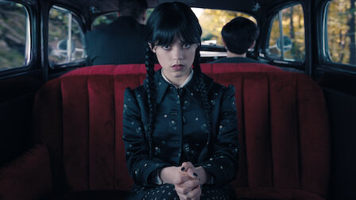
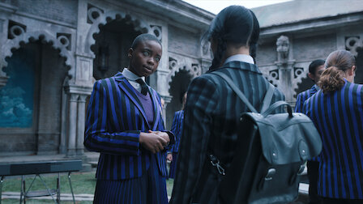
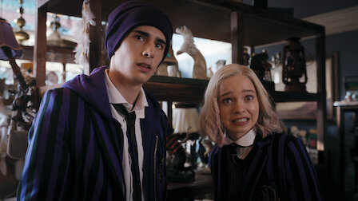
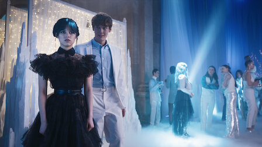
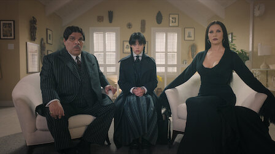
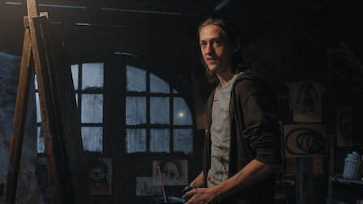
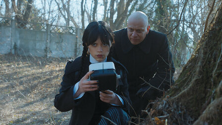
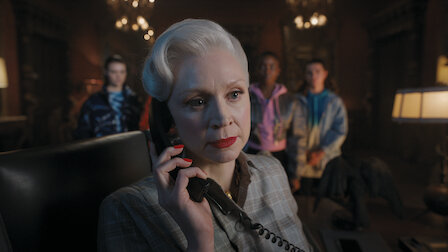

웬즈데이
2022 | 15+ | 시즌 1개 | 판타지똑똑하고 비꼬는 것에 도가 튼 웬즈데이 아담스. 암울함을 풍기는 그녀가
네버모어 아카데미에서 연쇄 살인 사건을 조사하기 시작한다. 새 친구도 사귀고,
앙숙도 만들며.
주연: 제나 오르테가,궨덜린 크리스티,리키 린드홈
크리에이터: 앨프리드 고프,마일스 밀러
- 영상
- |
- 웬즈데이

예고편 : 웬즈데이
- 회차
- |
- 웬즈데이
시즌1
공개일: 2022
똑똑하고 비꼬는 것에 도가 튼 웬즈데이 아담스. 암울함을 풍기는 그녀가 네버모어 아카데미에서 연쇄 살인 사건을
조사하기 시작한다. 새 친구들도 사귀고, 앙숙도 만들며.
조사하기 시작한다. 새 친구들도 사귀고, 앙숙도 만들며.
-

1. 수요일의 아이는 울적하다
60분이전 학교에서 끝내주게 사악한 장난을 치는 바람에
퇴학당한 웬즈데이. 부모님은 둘이 처음 사랑에 빠졌던
기숙학교, 네버모어 아카데미로 웬즈데이를 보낸다. -

2. 가장 외로운 사람
49분그날 밤 벌어진 이상한 사건에 대해 웬즈데이를 취조하는
보안관. 이후, 웬즈데이는 살벌한 포컵 경주에서 강력한
라이벌과 맞붙는다. -

3. 친구냐 고독이냐
49분비밀의 사교클럽을 알게 된 웬즈데이. 네버모어의 별종들은
포용의 날을 맞아 제리코의 평범이들과 순례자 월드에서
어울린다. 달달한 퍼지 한입 하실 분? -

4. 우울하고 멋진 밤
50분웬즈데이가 까마귀 무도회 파트너로 제이비어를 선택하는
바람에 타일러는 질투가 난다. 그런데 씽에게는 다른
계획이 있었으니. 한편 유진은 동굴에서 잠복하기로 한다. -

5. 불행 심은 데 불행 난다
52분학부모 초청 주말, 웬즈데이는 가족의 과거를 파헤친다. 그
바람에 아빠가 체포될 줄은 몰랐지만. 이니드는 '늑대
각성'을 해야 한다는 압박감을 느낀다. -

6. 못되게 굴 때 생기는 일
50분웬즈데이에게 깜짝 생일 파티를 열어준 친구들. 의도는
좋았지만... 웬즈데이는 차라리 살인 사건을 해결하러 가고
싶다. 생일은 끔찍이도 싫으니까. -

7. 아직도 나를 모른다면 너의 손해
47분학교를 방문한 괴짜 페스터 삼촌이 괴물에 대한 가설을
늘어놓는다. 웬즈데이는 마지못해 타일러와 데이트를
하기로 한다. 장소는 바로 크랙스톤 석묘. -

8. 어둠의 무리
52분윔스 교장과 관련해 큰 문제에 휘말린 웬즈데이. 하지만
이건 시작일 뿐이었으니. 고대의 악령과 싸우려면 모든
친구들의 힘이 필요하다.
상세 정보
-
오프라인 시청저장 기능은 광고없는
멤버십에서만 이용 가능합니다. -
장르청춘 드라마,청소년 시리즈,
미스터리 시리즈,코미디 시리즈,
범죄 시리즈,미국 TV프로그램,
판타지 시리즈 -
웬즈데이 소개Tudum.com에서 비하인드 영상과 다른
소식을 만나보세요. -
출연
제나 오르테가
헌터 두핸
조지 파머
-
궨덜린 크리스티
퍼시 하인즈 화이트
나오미 J.오가와
-
리키 린드홈
에마 마이어스
캐서린 제타 존스
-
크리스티나 리치
조이 선데이
루이스 구스만
-
제이미 맥셰인
무사 모스타파
김동우(수정용)